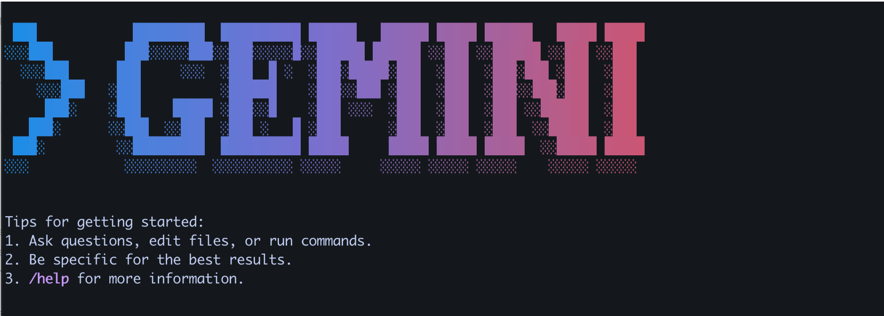

Code
# 下载并安装 nvm
curl -o- https://raw.githubusercontent.com/nvm-sh/nvm/v0.39.3/install.sh | bash
# 为当前 shell 会话激活 nvm
source ~/.nvm/nvm.sh
# 安装最新的稳定版本 Node.js
nvm install 20
# 验证安装是否成功
node -v
npm -v
Gemini CLI 是一个命令行界面工具，允许你直接从终端与 Google 的 Gemini 模型进行交互。它提供了一种便捷的方式来试验 Gemini、测试提示词，并构建利用大型语言模型能力的强大 Shell 脚本。
本指南将引导你完成安装和配置 Gemini CLI 的过程。
Gemini CLI 作为一个 npm 包分发，因此你需要在系统中安装 Node.js 和 npm。推荐的安装方式是使用 Node 版本管理器（nvm）。
当你准备好 Node.js 和 npm 后，可以在系统中全局安装 Gemini CLI。
为了确保拥有最新的功能和错误修复，可以不时地升级此包。
使用 Gemini CLI 前，你需要使用 Google 账户进行身份验证并配置项目。
你可以使用 Google Cloud 账户或 API 密钥登录。
或者将 GOOGLE_CLOUD_PROJECT 保存为环境变量，这样每次就不需要重新输入。
另外，你也可以使用 API 密钥进行身份验证。
你还需要指定 Google Cloud 中资源将被管理的地理位置。
配置完成后，你可以运行 Gemini CLI 开始与模型交互。
Gemini CLI 是一个强大的工具，适用于希望从命令行探索 Google Gemini 模型能力的开发者和技术爱好者。通过简单的安装和配置流程，你可以迅速在日常工作中利用生成式 AI 的强大能力。
---
title: "开始使用 Gemini CLI"
execute:
warning: false
error: false
eval: false
format:
html:
toc: true
toc-location: right
code-fold: show
code-tools: true
number-sections: true
code-block-bg: true
code-block-border-left: "#31BAE9"
---

# Gemini CLI 简介
Gemini CLI 是一个命令行界面工具，允许你直接从终端与 Google 的 Gemini 模型进行交互。它提供了一种便捷的方式来试验 Gemini、测试提示词，并构建利用大型语言模型能力的强大 Shell 脚本。
本指南将引导你完成安装和配置 Gemini CLI 的过程。
# 先决条件：安装 Node.js
Gemini CLI 作为一个 npm 包分发，因此你需要在系统中安装 Node.js 和 npm。推荐的安装方式是使用 Node 版本管理器（nvm）。
```{python}
# 下载并安装 nvm
curl -o- https://raw.githubusercontent.com/nvm-sh/nvm/v0.39.3/install.sh | bash
# 为当前 shell 会话激活 nvm
source ~/.nvm/nvm.sh
# 安装最新的稳定版本 Node.js
nvm install 20
# 验证安装是否成功
node -v
npm -v
```
# 安装 Gemini CLI
当你准备好 Node.js 和 npm 后，可以在系统中全局安装 Gemini CLI。
```{python}
# 安装 Gemini CLI 包
npm install -g @google/gemini-cli
```
## 升级 Gemini CLI
为了确保拥有最新的功能和错误修复，可以不时地升级此包。
```{python}
# 将 Gemini CLI 升级到最新版本
npm upgrade -g @google/gemini-cli
```
# 配置
使用 Gemini CLI 前，你需要使用 Google 账户进行身份验证并配置项目。
## 使用 Google 账户登录
你可以使用 Google Cloud 账户或 API 密钥登录。
### 选项一：使用 Google Cloud 账户登录
```{python}
# 设置你的 Google Cloud 项目 ID
export GOOGLE_CLOUD_PROJECT="your-google-cloud-project-id"
```
或者将 GOOGLE_CLOUD_PROJECT 保存为环境变量，这样每次就不需要重新输入。
#### 检查你使用的是 zsh 还是 bash
```{python}
echo $SHELL
```
#### 如果是 zsh：
```{python}
echo 'export GOOGLE_CLOUD_PROJECT="your-google-cloud-project-id"' >> ~/.zshrc
source ~/.zshrc
```
#### 如果是 bash：
```{python}
echo 'export GOOGLE_CLOUD_PROJECT="your-google-cloud-project-id"' >> ~/.bashrc
source ~/.bashrc
```
#### 检查是否成功添加：
```{python}
echo $GOOGLE_CLOUD_PROJECT
```
### 选项二：使用 API 密钥登录
另外，你也可以使用 API 密钥进行身份验证。
```{python}
# 将你的 Gemini API 密钥设置为环境变量
export GEMINI_API_KEY="your-gemini-api-key"
```
## 设置位置
你还需要指定 Google Cloud 中资源将被管理的地理位置。
```{python}
# 设置 Google Cloud 位置
export GOOGLE_CLOUD_LOCATION='us-central1'
```
# 运行 Gemini CLI
配置完成后，你可以运行 Gemini CLI 开始与模型交互。
```{python}
# 运行 Gemini CLI
gemini
```
# 结语
Gemini CLI 是一个强大的工具，适用于希望从命令行探索 Google Gemini 模型能力的开发者和技术爱好者。通过简单的安装和配置流程，你可以迅速在日常工作中利用生成式 AI 的强大能力。
# 参考资料
- [GitHub 上的 Gemini CLI](https://github.com/google-gemini/gemini-cli)
- [Node.js 下载页面](https://nodejs.org/en/download)